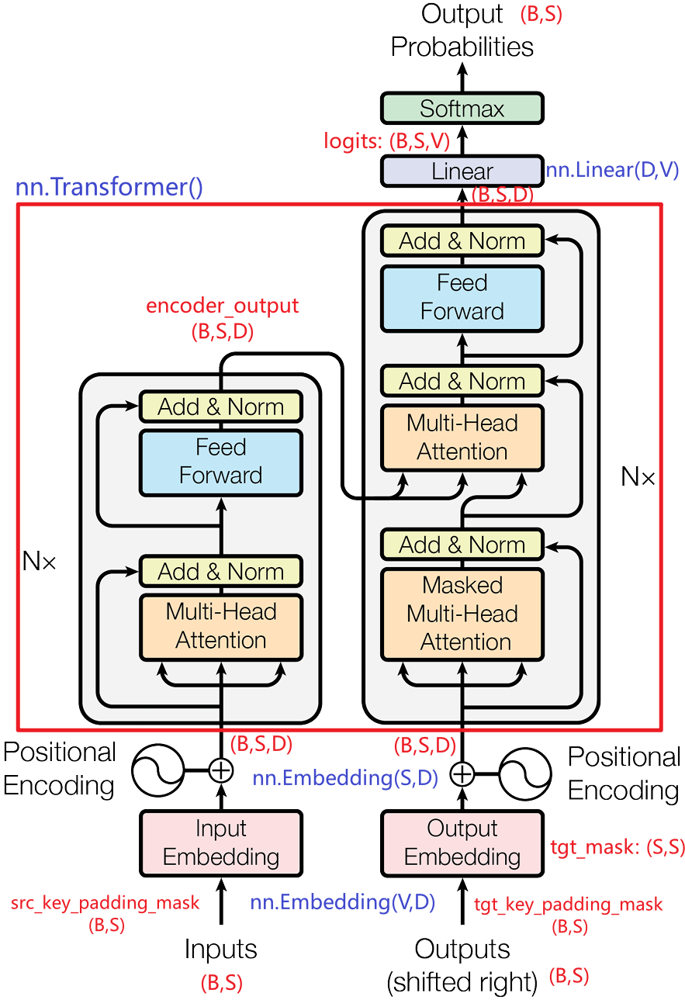
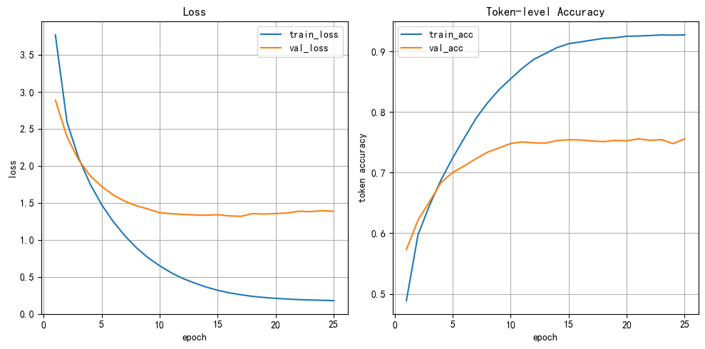

🌍 Transformer 机器翻译实战
import torch import matplotlib.pyplot as plt # 设置中文字体 plt.rcParams['font.sans-serif'] = ['SimHei'] # 微软雅黑 plt.rcParams['axes.unicode_minus'] = False # 解决负号显示问题 # 设置设备，优先使用顺序：GPU > MPS > CPU DEVICE = torch.device( "cuda" if torch.cuda.is_available() else "mps" if torch.backends.mps.is_available() else "cpu" ) print(f"当前设备：{DEVICE}")
当前设备：cuda
学习目标 - 了解 英译法的数据集 - 掌握 构建词表的方法 - 掌握 数据处理中的 截断填充方法 - 掌握 构建 基于 Transformer 的EncoderDecoder模型 - 掌握 训练 基于 Transformer 的EncoderDecoder模型
1 案例描述
使用 Transformer 架构，实现一个端到端的 英文 → 法文 机器翻译系统，覆盖完整 NLP 工作流程。
2 获取数据
.\data\eng-fra-v2.txt
""" i am from brazil . je viens du bresil . i am from france . je viens de france . i am from russia . je viens de russie . i am frying fish . je fais frire du poisson . i am not kidding . je ne blague pas . i am on duty now . maintenant je suis en service . i am on duty now . je suis actuellement en service . i am only joking . je ne fais que blaguer . i am out of time . je suis a court de temps . i am out of work . je suis au chomage . i am out of work . je suis sans travail . i am paid weekly . je suis payee a la semaine . i am pretty sure . je suis relativement sur . i am truly sorry . je suis vraiment desole . i am truly sorry . je suis vraiment desolee . """
'\ni am from brazil . je viens du bresil .\ni am from france . je viens de france .\ni am from russia . je viens de russie .\ni am frying fish . je fais frire du poisson .\ni am not kidding . je ne blague pas .\ni am on duty now . maintenant je suis en service .\ni am on duty now . je suis actuellement en service .\ni am only joking . je ne fais que blaguer .\ni am out of time . je suis a court de temps .\ni am out of work . je suis au chomage .\ni am out of work . je suis sans travail .\ni am paid weekly . je suis payee a la semaine .\ni am pretty sure . je suis relativement sur .\ni am truly sorry . je suis vraiment desole .\ni am truly sorry . je suis vraiment desolee .\n\n'
3 数据预处理
| 步骤 | 内容 | 说明 |
|---|---|---|
| 1. 文本清洗 | • 转小写 • 去除无效字符 • 保留基本标点 . ! ? |
目的：降低词表规模，减少噪声 |
| 2. 特殊符号（必须） | <PAD> : 句子补齐，不参与训练<SOS> : 解码起始符<EOS> : 解码终止符 |
注意： • <PAD> 只用于对齐长度• <SOS>/<EOS> 决定 Seq2Seq 是否能正确工作 |
| 3. Padding 与截断 | [SOS] w1 w2 ... wN [EOS] [PAD] [PAD] |
• 所有序列统一到 MAX_LENGTH• <PAD> 在损失和准确率中 必须忽略 |
4 模型结构
模型结构： - 输入部分： - 词嵌入层nn.Embedding(vocab_size, d_model) - 可学习位置编码nn.Embedding(seq_len, d_model) - EncoderDecoder: - nn.Transformer(d_model, nhead, num_encoder_layers, num_decoder_layers, dim_feedforward, dropout) - 输出部分： - 线性层nn.Linear(d_model, vocab_size)
基于 Transformer 的 Encoder-Decoder 架构为：

输入输出： - 输入source：(batch_size, src_seq_len) - 输出logits：(batch_size, tgt_seq_len-1, tgt_vocab_size) - 输入target：target[:,:-1], (batch_size, tgt_seq_len-1) - 输出target: target[:,1:], (batch_size, tgt_seq_len-1)
掩码mask：
- 源序列掩码src_key_padding_mask：(batch_size, src_seq_len),表示源序列中哪些位置是填充
实现过程
- 0. 数据清洗：去掉无效字符
- 1. 构建词表：构建两个词表，输入词表
vocab_source，输出词表vocab_target - 2. 准备数据集
- 按比例 (0.9/0.05/0.05) 拆分数据集为 train/val/test
- 张量 → 自定义的数据集对象 → 数据加载器
- 需要截断填充输入序列
source和输出序列target到固定长度MAX_LENGTH
- 3. 搭建神经网络
- 基于 Transformer 的 Encoder-Decoder 结构
- 4. 模型训练
- 在训练集上训练，在验证集上验证，在测试集上测试
- 准确率
accuracy为 token 级别的准确率，忽略<PAD>的影响 - 注意：实际工程中，机器翻译的评价指标通常使用 BLEU 分数，更能反映翻译质量。后面的项目会使用 BLEU 进行评价
- 5. 模型测试：评估模型在测试集上的准确率
- 6. 模型预测：输入一个英文句子，输出翻译的法语句子
5 训练关键技术
5.1 损失函数
CrossEntropyLoss(ignore_index=pad_idx)
<PAD>不参与损失计算- loss 是 非 PAD token 的平均损失
5.2 准确率定义
Token-level Accuracy（忽略 PAD）
⚠️ 注意：
- token accuracy ≠ 翻译质量
- 真实翻译评估通常使用 BLEU
5.3 推理（预测）流程
- Encoder 编码整句
- Decoder 从
<SOS>开始 - 自回归生成
- 遇到
<EOS>停止
5.4 Teacher Forcing
训练时，下一步输入是否使用“真实目标词”，还是使用上一步的预测结果。
Transformer训练时，teacher forcing是常用策略。
| 场景 | 下一步输入 |
|---|---|
| 训练 | 真实目标词 |
| 验证 / 测试 / 预测 | 模型预测词 |
6 Transformer英译法案例
""" 演示: Transformer英译法案例，基于 Transformer模型，实现英译法任务，属于seq2seq的经典案例。 模型结构： 输入部分： 词嵌入层nn.Embedding(vocab_size, d_model) 可学习位置编码nn.Embedding(max_len, d_model) EncoderDecoder: nn.Transformer(d_model, nhead, num_encoder_layers, num_decoder_layers, dim_feedforward, dropout) 输出部分： 线性层nn.Linear(d_model, vocab_size) 输入输出数据： 源序列source：(batch_size, src_seq_len) 目标序列target: (batch_size, tgt_seq_len) 输入: 源序列source: (batch_size, src_seq_len) 目标输入target_input: target[:,:-1], (batch_size, tgt_seq_len-1) 输出: 预测输出logits：(batch_size, tgt_seq_len-1, tgt_vocab_size) 预测结果y_pred: (batch_size, tgt_seq_len-1) 真实输出target: target[:,1:],(batch_size, tgt_seq_len-1) 掩码mask： - 源序列填充掩码src_key_padding_mask：(batch_size, src_seq_len),表示源序列中哪些位置是<PAD>填充 - 目标序列填充掩码tgt_key_padding_mask：(batch_size, tgt_seq_len-1),表示目标序列中哪些位置是<PAD>填充 - 目标序列因果掩码tgt_mask：(tgt_seq_len-1, tgt_seq_len-1),表示目标序列中每个位置能看到哪些位置，被mask的位置为True 案例的工作流： 0.数据清洗 去掉无效字符 1.构建词表 构建两个词表，输入词表src_vocab，输出词表tgt_vocab 2.准备数据集 1.按比例(0.9/0.05/0.05)拆分数据集为 train/val/test 2.查看句子长度分布情况，选择合适的句子最大长度seq_len 3.需要截断填充 输入source 和 输出target 到 固定长度 4.张量 -> 自定义的数据集对象 -> 数据加载器 3.搭建神经网络 输入部分 + EncoderDecoder + 输出部分 4.模型训练 在训练集上训练，在验证集上验证，在测试集上测试 准确率accuracy为token级别的准确率,忽略<PAD>的影响， teacher forcing, 是否使用真实标签预测下个token 5.模型测试 teacher forcing测试 自回归测试(工程主流) 6.模型预测-自回归推理 输入一个英文句子，输出翻译的法语句子 关键点说明: 1.source和target都要截断填充到最大长度SRC_SEQ_LEN/TGT_SEQ_LEN, 首尾要添加特殊表示，开始<SOS>,结束<EOS>,填充<PAD> 2.词表中要包含特殊符号: <PAD>,<SOS>,<EOS>, <PAD>是填充符号，通常在embedding中设置padding_idx = 0(PAD填充的词表索引) 3.位置编码使用可学习的位置编码，位置编码的序列长度一般为seq_len的2~4倍，主要是考虑：1.模型中一般不会直接定义数据参数；2.支持推理/预测阶段的变长输入 4.损失和准确率都是按照token计算的token级别的指标，忽略<PAD>; 实际机器翻译项目中使用BLEU指标 """ import json # 导包 import os # 文件操作 import re # 用于正则表达式 import time # 用于构建网络结构和函数的torch工具包 import torch import torch.nn as nn import torch.nn.functional as F from torch.utils.data import Dataset, DataLoader import torch.optim as optim # 用于随机生成数据 # import random import matplotlib.pyplot as plt import seaborn as sns from sklearn.model_selection import train_test_split # 用于拆分数据集 from tqdm import tqdm # 设置中文字体 plt.rcParams['font.sans-serif'] = ['SimHei'] plt.rcParams['axes.unicode_minus'] = False # 0.配置与常量 # 设置设备，优先使用顺序：GPU > MPS > CPU DEVICE = torch.device( "cuda" if torch.cuda.is_available() else "mps" if torch.backends.mps.is_available() else "cpu" ) print(f"device: {DEVICE}") # 特殊token SPECIAL_TOKENS = ["<PAD>", "<SOS>", "<EOS>"] # 文件路径 DATA_PATH = r"./data/eng-fra-v2.txt" MODEL_DIR = r"./model" # 创建路径 os.makedirs(MODEL_DIR, exist_ok=True) # 模型文件保存路径 MODEL_FILE = os.path.join(MODEL_DIR, "my_transformer.pth") # 图片路径 IMG_DIR = r"./img" os.makedirs(IMG_DIR, exist_ok=True) IMG_FILE = os.path.join(IMG_DIR, "train_acc.png") # 超参数: 训练前定义的参数，这些参数在模型训练中不会被更新 # 模型相关 D_MODEL = 512 N_HEAD = 8 NUM_LAYERS = 6 D_FF = 2048 DROPOUT = 0.1 # 训练相关 EPOCHS = 25 LR = 1e-4 WEIGHT_DECAY = 1e-3 # 数据相关 BATCH_SIZE = 64 # 设置seq_len，由句子长度分布情况决定，这里先随便写一个 SRC_SEQ_LEN = 12 TGT_SEQ_LEN = 12 # 设置max_len，位置编码的最大序列长度，通常为seq_len的2~4倍 # 24~48 MAX_SRC_LEN = 32 MAX_TGT_LEN = 32 # 0.数据清洗 # 去掉无效字符 def clean_text(string): # 1.转换为小写，去除首尾的空白符号 string = string.strip().lower() # 2.在标点.!?前面和后面都添加空格 # 参数1: 匹配的字符串模式；参数2: 要替换成的字符串；参数3: 替换的字符串 string = re.sub(r"([.!?])", r" \1 ", string) # 3.把特殊符号(除了常用的大小写字母 和 .!?)替换为空格 string = re.sub(r"[^a-zA-Z.!?]+", r" ", string) return string.strip() # 1.构建词表 # 构建两个词表，输入词表src_vocab，输出词表tgt_vocab def build_vocab(file_path=DATA_PATH): # 1.读取文件 with open(file_path, "r", encoding="utf-8") as f: lines = f.readlines() # 2.切分source-target, 按照\t切分 pairs = [line.strip().split("\t") for line in lines] pairs = [(clean_text(source), clean_text(target)) for source, target in pairs] # 对pairs进行去重 new_pairs = [] for pair in pairs: if pair not in new_pairs: new_pairs.append(pair) pairs = new_pairs # 3.构建词表，token-id的映射字典，首先要添加SPECIAL_TOKENS src_vocab = {token: idx for idx, token in enumerate(SPECIAL_TOKENS)} tgt_vocab = {token: idx for idx, token in enumerate(SPECIAL_TOKENS)} for source, target in pairs: # 3.1 遍历source，添加到词表src_vocab for token in source.split(): if token not in src_vocab: src_vocab[token] = len(src_vocab) # 3.2 遍历target，添加到词表tgt_vocab for token in target.split(): if token not in tgt_vocab: tgt_vocab[token] = len(tgt_vocab) # 4.构建反向词表，id-token的映射字典 rev_src_vocab = {idx: token for token, idx in src_vocab.items()} rev_tgt_vocab = {idx: token for token, idx in tgt_vocab.items()} # 5.返回结果, 注意工程上，应该先划分数据集，再使用训练集来构建词表 return src_vocab, tgt_vocab, rev_src_vocab, rev_tgt_vocab, pairs # 2.准备数据集 # 1.按比例(0.8/0.1/0.1)拆分数据集为 train/val/test def split_pairs(pairs, train_ratio=0.8, val_ratio=0.1): # 拆分数据集为训练集 和 测试集(验证集+测试集) train_pairs, test_pairs = train_test_split(pairs, train_size=train_ratio, random_state=4) # 拆分测试集为 验证集 和 测试集，至少有2000个样本(对应置信度约为±1.5%) val_pairs, test_pairs = train_test_split(test_pairs, train_size=val_ratio/(1-train_ratio), random_state=4) return train_pairs, val_pairs, test_pairs # 2.查看句子长度分布情况，选择合适的句子最大长度seq_len，只能用训练集 def plot_seq_len_dist(pairs): # 1.统计 source 和 target 的句子长度 src_lens = [len(source.split()) for source, target in pairs] tgt_lens = [len(target.split()) for source, target in pairs] # 2.创建1*2子图 fig, axs = plt.subplots(1, 2, figsize=(12, 5)) # 3.绘制source / target 的句子长度分布直方图 for ax, lens, name in zip(axs, [src_lens, tgt_lens], ["source句子长度分布", "target句子长度分布"]): sns.histplot(lens, ax=ax, bins=10, kde=False) ax.set_title(name) ax.set_xlabel("句子长度") ax.set_ylabel("句子数量") plt.tight_layout() plt.show() # 3.需要截断填充 输入source 和 输出target 到 固定长度 # 自定义一个数据集对象类，构造source/target 序列id class MyDataset(Dataset): """ 自定义的数据集对象，输出固定长度的source/target序列 """ # 1.定义__init__方法 def __init__(self, pairs, src_vocab, tgt_vocab, src_seq_len=SRC_SEQ_LEN, tgt_seq_len=TGT_SEQ_LEN): self.pairs = pairs self.src_vocab = src_vocab self.tgt_vocab = tgt_vocab self.src_seq_len = src_seq_len self.tgt_seq_len = tgt_seq_len self.num_samples = len(pairs) # 2.定义__len__方法, 返回数据集大小 def __len__(self): return self.num_samples # 3.定义__getitem__方法，返回某个索引的样本:source-target序列id def __getitem__(self, index): # 1.校验index,防止越界,假设num_samples=10，index=9 index = index % self.num_samples # 2.获取对应的source/target句子对 source, target = self.pairs[index] # 3.将句子转换为索引序列 index_source = [self.src_vocab.get(token, self.src_vocab.get("<PAD>",0)) for token in source.split()] index_target = [self.tgt_vocab.get(token, self.tgt_vocab.get("<PAD>",0)) for token in target.split()] # 4.截断填充source/target序列到固定长度src_seq_len/tgt_seq_len index_source = self.pad_sequence(index_source, self.src_vocab, self.src_seq_len) index_target = self.pad_sequence(index_target, self.tgt_vocab, self.tgt_seq_len) # 5.返回样本：source-target序列id return index_source, index_target # 4.定义pad_sequence方法，截断填充序列到固定长度 def pad_sequence(self, index_seq, vocab, seq_len): # 1.截断序列到seq_len-2 index_seq = index_seq[:seq_len-2] # 2.首尾添加开始<SOS> 和 结束<EOS> 的索引 index_seq = [vocab["<SOS>"]] + index_seq + [vocab["<EOS>"]] # 3.填充序列到固定长度seq_len，使用<PAD>填充 index_seq += [vocab.get("<PAD>",0)] * (seq_len - len(index_seq)) # 4.返回张量 return torch.tensor(index_seq, dtype=torch.long) # 3.搭建神经网络 # 3.1 先定义一个可学习的位置编码类 class LearnablePositionalEncoding(nn.Module): # 1.定义__init__方法 def __init__(self,d_model=512,max_len=1000): super().__init__() # 1.初始化可学习的位置编码，使用nn.Embedding self.position_encoding = nn.Embedding(max_len,d_model) # 2.forward方法 def forward(self,x): # x: (batch_size, seq_len, d_model), 词向量 # 1.先获取seq_len seq_len = x.shape[1] # 2.构造seq_len的索引张量：0~seq_len-1,torch.arange(0,seq_len,) position_ids = torch.arange(0,seq_len,dtype=torch.long, device=x.device) # (seq_len,) -> (1, seq_len) position_ids = position_ids.unsqueeze(0) # 3.进行位置编码,(1, seq_len) -> (1, seq_len, d_model) pos_encoding = self.position_encoding(position_ids) # 4.返回位置编码+词向量x,(batch_size, seq_len, d_model) return x + pos_encoding # 3.2 定义模型类，实现一个完整的Transformer模型 class MyTransformer(nn.Module): """ 自定义Transformer模型，用于英译法任务，seq2seq任务 组成: 输入部分(源序列/目标序列的 词嵌入层+位置编码) + EncoderDecoder + 输出部分(线性层) 参数: src_vocab: 源序列词表 tgt_vocab: 目标序列词表 d_model: 特征维度 n_heads: 注意力头数 num_layers: 编码器/解码器层数 d_ff: 前馈网络的隐藏层维度 dropout: 丢弃概率 输入: source: (batch_size, src_seq_len) target: (batch_size, tgt_seq_len) src_key_padding_mask(内部构造，无需手动输入): (batch_size, src_seq_len), 源序列的填充掩码 tgt_key_padding_mask(内部构造，无需手动输入): (batch_size, tgt_seq_len), 目标序列的填充掩码 tgt_mask(内部构造，无需手动输入): (tgt_seq_len, tgt_seq_len), 目标序列的因果掩码 输出: logits: (batch_size, tgt_seq_len, tgt_vocab_size), 预测分数 encoder_output: (batch_size, src_seq_len, d_model), 编码器输出 decoder_output: (batch_size, tgt_seq_len, d_model), 解码器输出 """ # 1.定义__init__方法 def __init__( self, src_vocab, tgt_vocab, d_model=512, n_heads=8, num_layers=6, d_ff=2048, dropout=0.1): super().__init__() # 1.初始化参数 self.src_vocab = src_vocab # 源序列词表 self.tgt_vocab = tgt_vocab # 目标序列词表 self.d_model = d_model # 特征维度 self.n_heads = n_heads # 注意力头数 self.num_layers = num_layers # 编码器/解码器层数 self.d_ff = d_ff # 前馈网络的隐藏层维度，d_ff = d_model * 4 self.dropout = dropout # 丢弃概率 # 获取PAD的索引，用于在forward中来构造src_key_padding_mask和tgt_key_padding_mask self.src_pad_idx = self.src_vocab.get("<PAD>",0) self.tgt_pad_idx = self.tgt_vocab.get("<PAD>",0) # 2.初始化词嵌入层 和 位置编码 # 源序列和目标序列的词嵌入层，padding_idx用于指定填充位置，填充位置的向量固定为全0，不更新梯度 self.src_embedding = nn.Embedding(len(src_vocab), d_model, padding_idx=self.src_pad_idx) self.tgt_embedding = nn.Embedding(len(tgt_vocab), d_model, padding_idx=self.tgt_pad_idx) self.src_pos_encoding = LearnablePositionalEncoding( d_model=d_model, max_len=MAX_SRC_LEN ) self.tgt_pos_encoding = LearnablePositionalEncoding( d_model=d_model, max_len=MAX_TGT_LEN ) # 3.初始化编码器-解码器，nn.Transformer self.transformer = nn.Transformer( d_model=d_model, # 特征维度 nhead=n_heads, # 注意力头数 num_encoder_layers=num_layers, # 编码器层数 num_decoder_layers=num_layers, # 解码器层数 dim_feedforward=d_ff, # 前馈网络的隐藏层维度 dropout=dropout, # 丢弃概率 batch_first=True, # 输入输出张量的维度顺序，True: (batch_size, seq_len, d_model) norm_first=True, # 是否把LayerNorm提前，True 表示 pre LN, 也就是LSDA: LayerNorm - sublayer - dropout - add, # False 表示 post LN, SDAL: sublayer - dropout - add - LayerNorm ) # 4.初始化输出线性层 self.linear1 = nn.Linear(d_model, len(tgt_vocab)) def _generate_causal_mask(self, seq_len): # 构造一个上三角矩阵，上三角都为True,对角线以及下面都是 False return torch.triu(torch.ones(seq_len, seq_len), diagonal=1).to(dtype=torch.bool, device=DEVICE) # 2.forward方法 def forward(self, source, target=None, is_inference=False): """ 前向传播方法，根据是否提供 target 区分训练模式和推理模式。 输入: source: 源序列，(batch_size, src_seq_len)。 target: 目标序列，(batch_size, tgt_seq_len)。 若为 None，则进入推理模式； 否则进入训练模式。 构造tgt_input/tgt_output: tgt_input = target[:,:-1]，(batch_size, tgt_seq_len-1) tgt_output = target[:,1:] (目标真实值) is_inference: 是否是最终推理(生成序列最大长度为MAX_TGT_LEN)，还是测试阶段(TGT_SEQ_LEN) 返回: - 训练模式：{"logits": logits}，logits: (batch_size, tgt_seq_len-1, tgt_vocab_size)，目标预测结果 - 推理模式：{"logits": all_logits, "tokens": ys}，包含预测分数和生成的 token 序列 """ # 1.根据target来决定训练模式或推理模式 # 训练模式 if target is not None: # 0.构造tgt_input tgt_input = target[:, :-1] # (batch_size, tgt_seq_len-1) # tgt_output = target[:, 1:] # 1.构造掩码 # src_key_padding_mask(内部构造，无需手动输入): (batch_size, src_seq_len), 源序列的填充掩码 # source: (batch_size, src_seq_len) src_key_padding_mask = (source == self.src_pad_idx).to(DEVICE) # tgt_key_padding_mask(内部构造，无需手动输入): (batch_size, tgt_seq_len-1), 目标序列的填充掩码 # tgt_input: (batch_size, tgt_seq_len-1) tgt_key_padding_mask = (tgt_input == self.tgt_pad_idx).to(DEVICE) # tgt_mask(内部构造，无需手动输入): (tgt_seq_len-1, tgt_seq_len-1), 目标序列的因果掩码 tgt_mask = self._generate_causal_mask(tgt_input.size(1)) # 2.经过词嵌入层 # (batch_size,src_seq_len) - (batch_size,src_seq_len,d_model) src_embedding = self.src_embedding(source) tgt_embedding = self.tgt_embedding(tgt_input) # (batch_size,tgt_seq_len-1,d_model) # 3.添加位置编码 src_embedding = self.src_pos_encoding(src_embedding) # (batch_size,src_seq_len,d_model) tgt_embedding = self.tgt_pos_encoding(tgt_embedding) # (batch_size,tgt_seq_len-1,d_model) # 4.经过Transformer的Encoder-Decoder output = self.transformer( src=src_embedding, # 源序列的词向量 tgt=tgt_embedding, # 目标序列的词向量 src_key_padding_mask=src_key_padding_mask, # 源序列的填充掩码 tgt_key_padding_mask=tgt_key_padding_mask, # 目标序列的填充掩码 memory_key_padding_mask=src_key_padding_mask, # 记忆填充掩码，等于源序列的填充掩码 tgt_mask=tgt_mask # 目标序列的因果掩码 ) # (batch_size,tgt_seq_len-1,d_model) # 5.经过线性层 logits = self.linear1(output) # (batch_size,tgt_seq_len-1,tgt_vocab_size) return {"logits": logits} # 推理模式,自回归预测下一个token else: # 模型逐个预测下一个token，然后把新的token拼接回预测序列中，继续预测 # 思路: 初始化<SOS> -> 预测第一个词 token1 -> 拼接 <SOS> token1 # -> 预测第二个词 token2 -> 拼接 <SOS> token1 token2 -> ... # -> 到最大长度停止，或者遇到<EOS>停止 # 1.计算自回归生成的最大长度，is_inference # 不考虑开头的<SOS> if is_inference: # 最终的自回归推理阶段，没有真实目标序列 MAX_LEN = MAX_TGT_LEN-1 else: # 测试阶段的自回归推理，要求生成的目标序列长度与真实目标序列长度一致，为了计算loss MAX_LEN = TGT_SEQ_LEN-1 # 2.构造源序列的填充掩码src_key_padding_mask # (batch_size, src_seq_len) src_key_padding_mask = (source == self.src_pad_idx).to(DEVICE) # 3.获取Encoder的输出结果 encoder_output = self.encode(source, src_key_padding_mask) # (batch_size,src_seq_len,d_model) # 4.初始化解码器输入tgt=<SOS>,(batch_size, tgt_seq_len) # (batch_size, 1) batch_size = source.size(0) # 目标序列 ys = torch.full((batch_size, 1), self.tgt_vocab.get("<SOS>",1), dtype=torch.long, device=DEVICE) # 初始化化预测logits列表,tgt_output all_logits = [] # 5.自回归训练，逐个生成目标序列的token # 遍历目标序列的长度MAX_LEN for i in range(MAX_LEN): # 1.构造掩码 # 1.1 生成当前目标序列的因果掩码，(ys.shape[1],ys.shape[1]) tgt_mask = self._generate_causal_mask(ys.size(1)) # 1.2 生成当前目标序列的填充掩码，(batch_size, ys.shape[1]) tgt_key_padding_mask = (ys == self.tgt_pad_idx).to(DEVICE) # 2.调用decode方法进行解码 decoder_output = self.decode( tgt=ys, # 当前目标序列 encoder_output=encoder_output, # 编码器的输出结果 tgt_key_padding_mask=tgt_key_padding_mask, # 目标序列的填充掩码 src_key_padding_mask=src_key_padding_mask, # 源序列的填充掩码 tgt_mask=tgt_mask, # 目标序列的因果掩码 ) # (batch_size,t,d_model), # 3.经过线性层，得到logits logits = self.linear1(decoder_output[:,-1,:]) # (batch_size,tgt_vocab_size) # 4.保存当前时间步的预测结果 all_logits.append(logits) # 5.获取预测概率最大的词的索引 this_word = logits.argmax(dim=-1) # (batch_size,) -> (batch_size,1) # 6.向ys中添加预测的词, # this_word: (batch_size,) -> (batch_size,1) ys = torch.cat([ys, this_word.unsqueeze(1)], dim=-1) # (batch_size,t+1) # 6.返回最终的预测结果all_logits和生成的目标序列ys(去掉<SOS>) return { "logits": torch.stack(all_logits,dim=1), # (B,t,V) "ys": ys[:,1:], # (batch_size,t) } # 3.encode方法 # transformer的编码方法，就是编码器的编码过程 def encode(self, source, src_key_padding_mask): # 1.经过词嵌入层 + 位置编码 src_embedding = self.src_embedding(source) src_embedding = self.src_pos_encoding(src_embedding) # 2.经过Transformer.encoder encoder_output = self.transformer.encoder( src=src_embedding, src_key_padding_mask=src_key_padding_mask ) # (batch_size,src_seq_len,d_model) return encoder_output # 4.decode方法 # transformer的解码方法，就是解码器的解码过程 def decode(self, tgt, encoder_output, tgt_key_padding_mask, src_key_padding_mask, tgt_mask): # 1.经过词嵌入层 + 添加位置编码 tgt_embedding = self.tgt_embedding(tgt) tgt_embedding = self.tgt_pos_encoding(tgt_embedding) # 2.经过Transformer.decoder decoder_output = self.transformer.decoder( tgt=tgt_embedding, memory=encoder_output, memory_key_padding_mask=src_key_padding_mask, # 记忆填充掩码，等于源序列的填充掩码，用于Decoder的交叉注意力机制 tgt_key_padding_mask=tgt_key_padding_mask, # 目标序列的填充掩码 tgt_mask=tgt_mask # 目标序列的因果掩码 ) # (batch_size,tgt_seq_len-1,d_model) return decoder_output # 4.模型训练 # 在训练集上训练，在验证集上验证，在测试集上测试 # 准确率accuracy为token级别的准确率,忽略<PAD>的影响 # 4.1 训练一个轮次 def train_one_epoch(model, train_loader, loss_fn, optimizer): """ 训练一个epoch,计算token级别的loss和acc token_acc不考虑PAD填充位，从第2个词开始，也就是对比真实值target_output = target[:,1:],预测值logits(batch_size,src_seq_len-1) :param model: 模型 :param train_loader: 训练集数据加载器 :param loss_fn: 损失函数对象 :param optimizer: 优化器对象 :return: 当前epoch的平均损失avg_loss, 准确率avg_acc """ # 1.设置为训练模式 model.train() # 2.初始化按照token来计算的 总损失、总预测正确的token数量、总的有效token数量(去掉PAD) total_loss = 0.0 total_correct_tokens = 0 total_tokens = 0 # 3.遍历数据加载器，分批训练 for x, y in tqdm(train_loader): # 1.迁移数据到设备 x = x.to(DEVICE) y = y.to(DEVICE) # 2.前向传播 y_output = model(x, y) # {"logits": logits} y_logits = y_output["logits"] # (batch_size,tgt_seq_len-1,tgt_vocab_size) # 3.忽略<PAD>填充位，构造mask，获取有效token的数量 y_true = y[:, 1:] # (batch_size,tgt_seq_len-1) pad_idx = SPECIAL_TOKENS.index("<PAD>") mask = y_true != pad_idx # print(f"y_true: {y_true}") # print(f"mask.shape: {mask.shape}") # 获取当前批次的总的有效token数量 num_tokens = mask.sum().item() # (batch_size,) # print(f"num_tokens: {num_tokens}") # 4.计算损失 # ce多分类交叉熵计算的损失是沿着0轴平均的损失，这里需要将样本数量变成token的数量 y_true_1d = y_true.reshape(-1) # (*,) # print(f"y_logits.shape: {y_logits.shape}") # print(f"y_true.shape: {y_true_1d.shape}") y_logits_2d = y_logits.reshape(-1, y_logits.shape[-1]) loss = loss_fn(y_logits_2d, y_true_1d) # 5.梯度清零 optimizer.zero_grad() # 6.反向传播 loss.backward() # 7.更新参数 optimizer.step() # 8.更新总损失，预测正确的token数，有效token数 total_loss += loss.item() * num_tokens total_correct_tokens += ((y_logits.argmax(dim=-1) == y_true)&mask).sum().item() # print(f"total_correct_tokens: {total_correct_tokens}") total_tokens += num_tokens # 4.计算平均损失，准确率 avg_loss = total_loss / total_tokens acc = total_correct_tokens / total_tokens # 5.返回结果 return avg_loss, acc # 4.2 模型评估 @torch.no_grad() # 关闭梯度计算，节省20%显卡内存 def evaluate(model, val_loader, loss_fn, teacher_forcing=True): """ 评估函数,计算token级别的loss和acc token_acc不考虑PAD填充位，从第2个词开始，也就是对比真实值target_output = target[:,1:],预测值logits(batch_size,src_seq_len-1) :param model: 模型 :param val_loader: 验证集数据加载器 :param loss_fn: 损失函数对象 :param optimizer: 优化器对象 :param teacher_forcing: 是否使用teacher forcing模式，就是参考当前真实token生成下个token :return: 当前epoch的平均损失avg_loss, 准确率avg_acc """ # 1.设置为评估模式 model.eval() # 2.初始化按照token来计算的 总损失、总预测正确的token数量、总的有效token数量(去掉PAD) total_loss = 0.0 total_correct_tokens = 0 total_tokens = 0 # 3.遍历数据加载器，分批评估 for x, y in tqdm(val_loader): # 1.迁移数据到设备 x = x.to(DEVICE) y = y.to(DEVICE) # 2.前向传播 if teacher_forcing: y_output = model(x, y) # {"logits": logits} else: y_output = model(x, None) # {"logits": all_logits, "tokens": ys} y_logits = y_output["logits"] # (batch_size,tgt_seq_len-1,tgt_vocab_size) # 3.忽略<PAD>填充位，构造mask，获取有效token的数量 y_true = y[:, 1:] # (batch_size,tgt_seq_len-1) pad_idx = SPECIAL_TOKENS.index("<PAD>") mask = y_true != pad_idx # 获取当前批次的总的有效token数量 num_tokens = mask.sum().item() # (batch_size,) # 4.计算损失 # ce多分类交叉熵计算的损失是沿着0轴平均的损失，这里需要将样本数量变成token的数量 y_true_1d = y_true.reshape(-1) # (*,) # print(f"y_logits.shape: {y_logits.shape}") # print(f"y_true.shape: {y_true_1d.shape}") y_logits_2d = y_logits.reshape(-1, y_logits.shape[-1]) loss = loss_fn(y_logits_2d, y_true_1d) # # 5.梯度清零 # optimizer.zero_grad() # # 6.反向传播 # loss.backward() # # 7.更新参数 # optimizer.step() # 8.更新总损失，预测正确的token数，有效token数 total_loss += loss.item() * num_tokens total_correct_tokens += ((y_logits.argmax(dim=-1) == y_true)&mask).sum().item() # print(f"total_correct_tokens: {total_correct_tokens}") total_tokens += num_tokens # 4.计算平均损失，准确率 avg_loss = total_loss / total_tokens acc = total_correct_tokens / total_tokens # 5.返回结果 return avg_loss, acc # 4.3 训练主函数 def train(train_dataset, val_dataset, src_vocab, tgt_vocab, epochs=EPOCHS): """ 训练过程： - 每个epoch，在训练集上训练，在验证集上验证 - 保存当前最小验证损失的模型，避免训练中途中断 - 记录训练过程中的每个epoch的损失和准确率，用于绘图 :param train_dataset: 训练集 :param val_dataset: 验证集 :param src_vocab: 源序列的词表 :param tgt_vocab: 目标序列的词表 :param epochs: 训练总轮数 :return: 训练/验证的 损失列表+准确率列表 """ # 1.准备数据集 # 数据集对象 -> 数据加载器对象 # 训练时，打乱数据；验证或测试时，不打乱数据 train_loader = DataLoader(train_dataset, batch_size=BATCH_SIZE, shuffle=True) val_loader = DataLoader(val_dataset, batch_size=BATCH_SIZE, shuffle=False) # 2.创建模型对象,并迁移到DEVICE model = MyTransformer( src_vocab, tgt_vocab, d_model=D_MODEL, n_heads=N_HEAD, num_layers=NUM_LAYERS, d_ff=D_FF, dropout=DROPOUT ).to(DEVICE) # 3.创建损失函数和优化器对象 # ignore_index: 计算损失时，忽略的token索引，一般为PAD填充位的索引<PAD> loss_fn = nn.CrossEntropyLoss(ignore_index=tgt_vocab.get("<PAD>",0)) optimizer = optim.AdamW(model.parameters(), lr=LR, weight_decay=WEIGHT_DECAY) # 4.初始化训练指标，记录 训练损失、训练准确率、验证损失、验证准确率 train_losses = [] train_accs = [] val_losses = [] val_accs = [] # 初始化最优验证损失 min_val_loss = float("inf") best_acc = 0.0 # 最优验证损失对应的准确率 # 5.开始训练，遍历epochs for epoch in range(epochs): # 1.在训练集上训练一个轮次，得到训练损失，准确率，都是按照token来计算的token级别的指标 train_loss, train_acc = train_one_epoch(model, train_loader, loss_fn, optimizer) # 2.在验证集上验证当前模型，如果验证损失是最优的，则保存模型 val_loss, val_acc = evaluate(model, val_loader, loss_fn) # 3.记录训练/验证的 损失和准确率 train_losses.append(train_loss) train_accs.append(train_acc) val_losses.append(val_loss) val_accs.append(val_acc) # 4.根据验证损失是否小于当前最优验证损失，来保存模型 if val_loss < min_val_loss: # 更新当前最优验证损失 min_val_loss = val_loss best_acc = val_acc # 保存当前模型 torch.save(model.state_dict(), MODEL_FILE) print(f"保存模型，当前最小验证损失为: {val_loss:.4f}, 准确率: {best_acc:.4f}") # 5.打印训练指标 print(f"Epoch: {epoch+1} / {epochs} | " f"train_loss: {train_loss:.4f} | " f"train_acc: {train_acc:.4f} | " f"val_loss: {val_loss:.4f} | " f"val_acc: {val_acc:.4f}") # 6.返回结果 return { "train_losses": train_losses, "train_accs": train_accs, "val_losses": val_losses, "val_accs": val_accs } # 绘图函数（损失与准确率曲线） def plot_history(history, out_path=IMG_FILE): """ 绘制训练/验证的 loss 与 accuracy 曲线（两幅子图） """ epochs = len(history["train_losses"]) # 总 epoch 数 x = list(range(1, epochs + 1)) # 横轴 plt.figure(figsize=(10, 5)) # 画布大小 # subplot 1: loss plt.subplot(1, 2, 1) # 左子图 plt.plot(x, history["train_losses"], label="train_loss") # 训练损失曲线 plt.plot(x, history["val_losses"], label="val_loss") # 验证损失曲线 plt.xlabel("epoch") # 横轴标题 plt.ylabel("loss") # 纵轴标题 plt.title("Loss") # 子图标题 plt.grid() plt.legend() # 图例 # subplot 2: accuracy plt.subplot(1, 2, 2) # 右子图 plt.plot(x, history["train_accs"], label="train_acc") # 训练准确率 plt.plot(x, history["val_accs"], label="val_acc") # 验证准确率 plt.xlabel("epoch") # 横轴标题 plt.ylabel("token accuracy") # 纵轴标题 plt.title("Token-level Accuracy") # 子图标题 plt.legend() # 图例 plt.grid() plt.tight_layout() # 紧凑布局 plt.savefig(out_path) # 保存图片 plt.show() print(f"Saved training curves to {out_path}") # 提示保存路径 # 6.模型预测 # 输入一个英文句子，输出翻译的法语句子 @torch.no_grad() # 关闭梯度计算 def predict(text, model, src_vocab, tgt_vocab, rev_tgt_vocab): """ 预测函数，根据传入的一个英文句子，调用训练好的模型来生成法语句子 :param text: 传入的英文句子 :param model: 训练好的模型 :param src_vocab: 源序列的词表 :param tgt_vocab: 目标序列的词表 :param rev_tgt_vocab: 目标序列的反义词表 :return: 模型生成的法语句子，遇到EOS要结束 """ # 1.迁移模型到设备 model=model.to(DEVICE) model.eval() # 评估模式 # 2.清洗文本clean_text text = clean_text(text) # 3.将输入文本text转为索引序列，添加首尾标记<SOS>,<EOS> index_seq = [src_vocab.get(token, 0) for token in text.split()] # 添加首尾标记<SOS>,<EOS>, seq_len index_seq = [src_vocab.get("<SOS>", 1)] + index_seq + [src_vocab.get("<EOS>", 2)] # 1D -> 2D,(seq_len,) -> (1,seq_len) index_seq = torch.tensor(index_seq).unsqueeze(dim=0).to(DEVICE) # 4.模型预测，前向传播，获取预测结果ys,目标索引序列 # "ys": ys[:, 1:], # (batch_size,t) # 开启自回归target=None，推理模式is_inference=True output = model(index_seq, None, is_inference=True) y_tokens = output["ys"] # (1,31) # 去掉<EOS>以及之后的token eos_idx = tgt_vocab.get("<EOS>", 2) y_tokens_list = y_tokens[0].tolist() if eos_idx in y_tokens_list: eos_position = y_tokens_list.index(eos_idx) y_tokens_list = y_tokens_list[:eos_position] # 5.转为token文本 # 索引序列 -> token序列 -> 文本 y_tokens = [rev_tgt_vocab[idx] for idx in y_tokens_list] return " ".join(y_tokens) from collections import Counter import math def ids_to_words(token_ids, rev_vocab): """ 将 token id 序列转成词序列，遇到 <EOS>/<PAD> 停止。 """ words = [] for token_id in token_ids: token = rev_vocab.get(int(token_id), '<PAD>') if token in {'<EOS>', '<PAD>'}: break if token != '<SOS>': words.append(token) return words def compute_corpus_bleu(references, candidates, max_n=4): """ 简化版 corpus BLEU（单参考）。返回 0~100 分。 """ if not references or not candidates: return 0.0 clipped_counts = [0] * max_n total_counts = [0] * max_n ref_len = 0 cand_len = 0 for ref, cand in zip(references, candidates): ref_len += len(ref) cand_len += len(cand) for n in range(1, max_n + 1): if len(cand) < n: continue cand_ngrams = Counter(tuple(cand[i:i + n]) for i in range(len(cand) - n + 1)) ref_ngrams = Counter(tuple(ref[i:i + n]) for i in range(len(ref) - n + 1)) total_counts[n - 1] += sum(cand_ngrams.values()) clipped_counts[n - 1] += sum(min(v, ref_ngrams[k]) for k, v in cand_ngrams.items()) precisions = [] for clipped, total in zip(clipped_counts, total_counts): precisions.append((clipped / total) if total > 0 else 0.0) if cand_len == 0: return 0.0 # 平滑，避免高阶 n-gram 为 0 时 BLEU 直接为 0 precisions = [max(p, 1e-9) for p in precisions] bp = 1.0 if cand_len > ref_len else math.exp(1 - ref_len / cand_len) bleu = bp * math.exp(sum(math.log(p) for p in precisions) / max_n) return bleu * 100 @torch.no_grad() def evaluate_bleu(model, data_loader, rev_tgt_vocab): """ 测试阶段：自回归生成并计算 corpus BLEU。 """ model.eval() model.to(DEVICE) references = [] candidates = [] for x, y in tqdm(data_loader): x = x.to(DEVICE) output = model(x, None) # 自回归生成 pred_tokens = output['ys'].cpu() true_tokens = y[:, 1:].cpu() # 去掉 <SOS> for pred_ids, true_ids in zip(pred_tokens, true_tokens): candidates.append(ids_to_words(pred_ids.tolist(), rev_tgt_vocab)) references.append(ids_to_words(true_ids.tolist(), rev_tgt_vocab)) return compute_corpus_bleu(references, candidates) # 测试 if __name__ == '__main__': # sentence01 = " I'm2 a2 boy8 how are you90. " # result = clean_text(sentence01) # print(result) # 1.构建词表 src_vocab, tgt_vocab, rev_src_vocab, rev_tgt_vocab, pairs = build_vocab(file_path=DATA_PATH) print(f"src_vocab大小: {len(src_vocab)}") print(f"tgt_vocab大小: {len(tgt_vocab)}") print(f"pairs大小: {len(pairs)}") print(f"pairs: {pairs[:10]}") # 保存词表 if not os.path.exists(r"./model/src_vocab.json") or not os.path.exists(r"./model/tgt_vocab.json"): os.makedirs(r"./model",exist_ok=True) with open(r"./model/src_vocab.json", "w", encoding="utf-8") as f: json.dump(src_vocab, f) with open(r"./model/tgt_vocab.json", "w", encoding="utf-8") as f: json.dump(tgt_vocab, f) # 加载词表 if os.path.exists(r"./model/src_vocab.json") and os.path.exists(r"./model/tgt_vocab.json"): with open(r"./model/src_vocab.json", "r", encoding="utf-8") as f: src_vocab = json.load(f) rev_src_vocab = {v: k for k, v in src_vocab.items()} with open(r"./model/tgt_vocab.json", "r", encoding="utf-8") as f: tgt_vocab = json.load(f) rev_tgt_vocab = {v: k for k, v in tgt_vocab.items()} # print(f"src_vocab: {src_vocab}") # 2.准备数据集 # 拆分数据集 train_pairs, val_pairs, test_pairs = split_pairs(pairs) print(f"train_pairs大小: {len(train_pairs)}") print(f"val_pairs大小: {len(val_pairs)}") print(f"test_pairs大小: {len(test_pairs)}") # 可视化句子长度分布情况 # plot_seq_len_dist(train_pairs) # 创建数据集对象 train_dataset = MyDataset(train_pairs, src_vocab, tgt_vocab) val_dataset = MyDataset(val_pairs, src_vocab, tgt_vocab) test_dataset = MyDataset(test_pairs, src_vocab, tgt_vocab) print(f"train_dataset大小: {len(train_dataset)}") print(f"val_dataset大小: {len(val_dataset)}") print(f"test_dataset大小: {len(test_dataset)}") # for source, target in train_dataset: # print(f"source: {source}") # print(f"target: {target}") # break # 3.模型训练 history = train(train_dataset, val_dataset, src_vocab, tgt_vocab, epochs=EPOCHS) # 绘制训练过程 plot_history(history) # 4.模型测试 model = MyTransformer( src_vocab, tgt_vocab, d_model=D_MODEL, n_heads=N_HEAD, num_layers=NUM_LAYERS, d_ff=D_FF, dropout=DROPOUT ).to(DEVICE) # 加载模型参数文件 if os.path.exists(MODEL_FILE): model.load_state_dict(torch.load(MODEL_FILE)) print(f"加载模型参数文件: {MODEL_FILE}") else: print(f"模型参数文件不存在: {MODEL_FILE}") test_loader = DataLoader(test_dataset, batch_size=BATCH_SIZE, shuffle=False) # 实现teacher forcing模式的测试 test_loss, test_acc = evaluate( model, test_loader, loss_fn=nn.CrossEntropyLoss(ignore_index=tgt_vocab.get("<PAD>",0))) print("teacher forcing模式测试结果:") print(f"测试集准确率: {test_acc:.4f}") print(f"测试集损失: {test_loss:.4f}") # 实现自回归测试 test_loss, test_acc = evaluate( model, test_loader, loss_fn=nn.CrossEntropyLoss(ignore_index=tgt_vocab.get("<PAD>", 0)), teacher_forcing=False) print("自回归模式测试结果:") print(f"测试集准确率: {test_acc:.4f}") print(f"测试集损失: {test_loss:.4f}") test_bleu = evaluate_bleu(model, test_loader, rev_tgt_vocab) print(f"测试集 BLEU: {test_bleu:.2f}") # 5.模型预测 text = "i love you" result = predict(text, model, src_vocab, tgt_vocab, rev_tgt_vocab) print(result)
device: cuda
src_vocab大小: 2804
tgt_vocab大小: 4346
pairs大小: 10593
pairs: [('i m .', 'j ai ans .'), ('i m ok .', 'je vais bien .'), ('i m ok .', 'ca va .'), ('i m fat .', 'je suis gras .'), ('i m fat .', 'je suis gros .'), ('i m fit .', 'je suis en forme .'), ('i m hit !', 'je suis touche !'), ('i m hit !', 'je suis touchee !'), ('i m ill .', 'je suis malade .'), ('i m sad .', 'je suis triste .')]
train_pairs大小: 8474
val_pairs大小: 1059
test_pairs大小: 1060
train_dataset大小: 8474
val_dataset大小: 1059
test_dataset大小: 1060
<本地用户目录>\.conda\envs\nlp_project\lib\site-packages\torch\nn\modules\transformer.py:392: UserWarning: enable_nested_tensor is True, but self.use_nested_tensor is False because encoder_layer.norm_first was True
warnings.warn(
100%|██████████| 133/133 [00:08<00:00, 16.38it/s]
100%|██████████| 17/17 [00:00<00:00, 54.64it/s]
保存模型，当前最小验证损失为: 2.8790, 准确率: 0.5777
Epoch: 1 / 25 | train_loss: 3.7575 | train_acc: 0.4911 | val_loss: 2.8790 | val_acc: 0.5777
100%|██████████| 133/133 [00:07<00:00, 17.62it/s]
100%|██████████| 17/17 [00:00<00:00, 73.62it/s]
保存模型，当前最小验证损失为: 2.3784, 准确率: 0.6210
Epoch: 2 / 25 | train_loss: 2.5835 | train_acc: 0.6003 | val_loss: 2.3784 | val_acc: 0.6210
100%|██████████| 133/133 [00:07<00:00, 17.91it/s]
100%|██████████| 17/17 [00:00<00:00, 75.02it/s]
保存模型，当前最小验证损失为: 2.0892, 准确率: 0.6473
Epoch: 3 / 25 | train_loss: 2.1014 | train_acc: 0.6470 | val_loss: 2.0892 | val_acc: 0.6473
100%|██████████| 133/133 [00:07<00:00, 17.89it/s]
100%|██████████| 17/17 [00:00<00:00, 80.96it/s]
保存模型，当前最小验证损失为: 1.8580, 准确率: 0.6804
Epoch: 4 / 25 | train_loss: 1.7530 | train_acc: 0.6888 | val_loss: 1.8580 | val_acc: 0.6804
100%|██████████| 133/133 [00:07<00:00, 18.05it/s]
100%|██████████| 17/17 [00:00<00:00, 74.87it/s]
保存模型，当前最小验证损失为: 1.7066, 准确率: 0.6990
Epoch: 5 / 25 | train_loss: 1.4744 | train_acc: 0.7262 | val_loss: 1.7066 | val_acc: 0.6990
100%|██████████| 133/133 [00:07<00:00, 18.01it/s]
100%|██████████| 17/17 [00:00<00:00, 77.19it/s]
保存模型，当前最小验证损失为: 1.6070, 准确率: 0.7082
Epoch: 6 / 25 | train_loss: 1.2455 | train_acc: 0.7594 | val_loss: 1.6070 | val_acc: 0.7082
100%|██████████| 133/133 [00:07<00:00, 17.93it/s]
100%|██████████| 17/17 [00:00<00:00, 75.76it/s]
保存模型，当前最小验证损失为: 1.5212, 准确率: 0.7247
Epoch: 7 / 25 | train_loss: 1.0569 | train_acc: 0.7889 | val_loss: 1.5212 | val_acc: 0.7247
100%|██████████| 133/133 [00:07<00:00, 18.15it/s]
100%|██████████| 17/17 [00:00<00:00, 74.81it/s]
保存模型，当前最小验证损失为: 1.4579, 准确率: 0.7280
Epoch: 8 / 25 | train_loss: 0.8977 | train_acc: 0.8133 | val_loss: 1.4579 | val_acc: 0.7280
100%|██████████| 133/133 [00:07<00:00, 18.13it/s]
100%|██████████| 17/17 [00:00<00:00, 74.38it/s]
保存模型，当前最小验证损失为: 1.4064, 准确率: 0.7362
Epoch: 9 / 25 | train_loss: 0.7667 | train_acc: 0.8347 | val_loss: 1.4064 | val_acc: 0.7362
100%|██████████| 133/133 [00:07<00:00, 18.08it/s]
100%|██████████| 17/17 [00:00<00:00, 73.45it/s]
保存模型，当前最小验证损失为: 1.3642, 准确率: 0.7395
Epoch: 10 / 25 | train_loss: 0.6541 | train_acc: 0.8544 | val_loss: 1.3642 | val_acc: 0.7395
100%|██████████| 133/133 [00:07<00:00, 18.01it/s]
100%|██████████| 17/17 [00:00<00:00, 78.56it/s]
保存模型，当前最小验证损失为: 1.3535, 准确率: 0.7445
Epoch: 11 / 25 | train_loss: 0.5582 | train_acc: 0.8703 | val_loss: 1.3535 | val_acc: 0.7445
100%|██████████| 133/133 [00:07<00:00, 18.19it/s]
100%|██████████| 17/17 [00:00<00:00, 77.22it/s]
保存模型，当前最小验证损失为: 1.3193, 准确率: 0.7502
Epoch: 12 / 25 | train_loss: 0.4846 | train_acc: 0.8859 | val_loss: 1.3193 | val_acc: 0.7502
100%|██████████| 133/133 [00:07<00:00, 18.21it/s]
100%|██████████| 17/17 [00:00<00:00, 72.64it/s]
保存模型，当前最小验证损失为: 1.3111, 准确率: 0.7497
Epoch: 13 / 25 | train_loss: 0.4173 | train_acc: 0.8974 | val_loss: 1.3111 | val_acc: 0.7497
100%|██████████| 133/133 [00:07<00:00, 18.14it/s]
100%|██████████| 17/17 [00:00<00:00, 75.79it/s]
Epoch: 14 / 25 | train_loss: 0.3650 | train_acc: 0.9060 | val_loss: 1.3138 | val_acc: 0.7541
100%|██████████| 133/133 [00:07<00:00, 18.04it/s]
100%|██████████| 17/17 [00:00<00:00, 76.32it/s]
保存模型，当前最小验证损失为: 1.2972, 准确率: 0.7566
Epoch: 15 / 25 | train_loss: 0.3213 | train_acc: 0.9120 | val_loss: 1.2972 | val_acc: 0.7566
100%|██████████| 133/133 [00:07<00:00, 17.84it/s]
100%|██████████| 17/17 [00:00<00:00, 74.21it/s]
Epoch: 16 / 25 | train_loss: 0.2896 | train_acc: 0.9157 | val_loss: 1.3115 | val_acc: 0.7544
100%|██████████| 133/133 [00:07<00:00, 17.59it/s]
100%|██████████| 17/17 [00:00<00:00, 71.34it/s]
Epoch: 17 / 25 | train_loss: 0.2614 | train_acc: 0.9180 | val_loss: 1.3187 | val_acc: 0.7543
100%|██████████| 133/133 [00:07<00:00, 17.27it/s]
100%|██████████| 17/17 [00:00<00:00, 65.30it/s]
Epoch: 18 / 25 | train_loss: 0.2410 | train_acc: 0.9212 | val_loss: 1.3239 | val_acc: 0.7516
100%|██████████| 133/133 [00:07<00:00, 17.23it/s]
100%|██████████| 17/17 [00:00<00:00, 62.51it/s]
Epoch: 19 / 25 | train_loss: 0.2248 | train_acc: 0.9223 | val_loss: 1.3367 | val_acc: 0.7531
100%|██████████| 133/133 [00:07<00:00, 17.30it/s]
100%|██████████| 17/17 [00:00<00:00, 59.70it/s]
Epoch: 20 / 25 | train_loss: 0.2116 | train_acc: 0.9241 | val_loss: 1.3348 | val_acc: 0.7563
100%|██████████| 133/133 [00:07<00:00, 16.94it/s]
100%|██████████| 17/17 [00:00<00:00, 67.18it/s]
Epoch: 21 / 25 | train_loss: 0.2027 | train_acc: 0.9253 | val_loss: 1.3626 | val_acc: 0.7539
100%|██████████| 133/133 [00:07<00:00, 16.86it/s]
100%|██████████| 17/17 [00:00<00:00, 72.71it/s]
Epoch: 22 / 25 | train_loss: 0.1966 | train_acc: 0.9250 | val_loss: 1.3637 | val_acc: 0.7561
100%|██████████| 133/133 [00:07<00:00, 17.11it/s]
100%|██████████| 17/17 [00:00<00:00, 64.75it/s]
Epoch: 23 / 25 | train_loss: 0.1889 | train_acc: 0.9259 | val_loss: 1.3737 | val_acc: 0.7527
100%|██████████| 133/133 [00:07<00:00, 17.06it/s]
100%|██████████| 17/17 [00:00<00:00, 68.17it/s]
Epoch: 24 / 25 | train_loss: 0.1807 | train_acc: 0.9279 | val_loss: 1.3642 | val_acc: 0.7547
100%|██████████| 133/133 [00:08<00:00, 16.10it/s]
100%|██████████| 17/17 [00:00<00:00, 62.01it/s]
Epoch: 25 / 25 | train_loss: 0.1786 | train_acc: 0.9257 | val_loss: 1.3937 | val_acc: 0.7606

Saved training curves to ./img\train_acc.png
<本地用户目录>\.conda\envs\nlp_project\lib\site-packages\torch\nn\modules\transformer.py:392: UserWarning: enable_nested_tensor is True, but self.use_nested_tensor is False because encoder_layer.norm_first was True
warnings.warn(
加载模型参数文件: ./model\my_transformer.pth
100%|██████████| 17/17 [00:00<00:00, 56.29it/s]
teacher forcing模式测试结果:
测试集准确率: 0.7431
测试集损失: 1.4538
100%|██████████| 17/17 [00:02<00:00, 8.27it/s]
自回归模式测试结果:
测试集准确率: 0.6097
测试集损失: 3.2650
100%|██████████| 17/17 [00:01<00:00, 9.55it/s]
测试集 BLEU: 35.74
je vous vous .
from collections import Counter import math def ids_to_words(token_ids, rev_vocab): """ 将 token id 序列转成词序列，遇到 <EOS>/<PAD> 停止。 """ words = [] for token_id in token_ids: token = rev_vocab.get(int(token_id), '<PAD>') if token in {'<EOS>', '<PAD>'}: break if token != '<SOS>': words.append(token) return words def compute_corpus_bleu(references, candidates, max_n=4): """ 简化版 corpus BLEU（单参考）。返回 0~100 分。 """ if not references or not candidates: return 0.0 clipped_counts = [0] * max_n total_counts = [0] * max_n ref_len = 0 cand_len = 0 for ref, cand in zip(references, candidates): ref_len += len(ref) cand_len += len(cand) for n in range(1, max_n + 1): if len(cand) < n: continue cand_ngrams = Counter(tuple(cand[i:i + n]) for i in range(len(cand) - n + 1)) ref_ngrams = Counter(tuple(ref[i:i + n]) for i in range(len(ref) - n + 1)) total_counts[n - 1] += sum(cand_ngrams.values()) clipped_counts[n - 1] += sum(min(v, ref_ngrams[k]) for k, v in cand_ngrams.items()) precisions = [] for clipped, total in zip(clipped_counts, total_counts): precisions.append((clipped / total) if total > 0 else 0.0) if cand_len == 0: return 0.0 # 平滑，避免高阶 n-gram 为 0 时 BLEU 直接为 0 precisions = [max(p, 1e-9) for p in precisions] bp = 1.0 if cand_len > ref_len else math.exp(1 - ref_len / cand_len) bleu = bp * math.exp(sum(math.log(p) for p in precisions) / max_n) return bleu * 100 @torch.no_grad() def evaluate_bleu(model, data_loader, rev_tgt_vocab): """ 测试阶段：自回归生成并计算 corpus BLEU。 """ model.eval() model.to(DEVICE) references = [] candidates = [] for x, y in tqdm(data_loader): x = x.to(DEVICE) output = model(x, None) # 自回归生成 pred_tokens = output['ys'].cpu() true_tokens = y[:, 1:].cpu() # 去掉 <SOS> for pred_ids, true_ids in zip(pred_tokens, true_tokens): candidates.append(ids_to_words(pred_ids.tolist(), rev_tgt_vocab)) references.append(ids_to_words(true_ids.tolist(), rev_tgt_vocab)) return compute_corpus_bleu(references, candidates) test_bleu = evaluate_bleu(model, test_loader, rev_tgt_vocab) print(f"测试集 BLEU: {test_bleu:.2f}")
100%|██████████| 17/17 [00:01<00:00, 10.45it/s]
测试集 BLEU: 35.74
7 扩展：Transformer 为什么能在 seq_len 维度并行？
7.1 核心结论
Transformer 训练时可并行，推理时通常不可并行（自回归生成）。
7.2 原因
-
注意力机制是矩阵计算，天然支持并行
注意力计算： $ \mathrm{Attention}(Q, K, V)=\mathrm{softmax}!\left(\frac{QK^\top}{\sqrt{d_k}}+M\right)V $ 该过程本质是张量/矩阵运算，天然支持并行。 -
训练使用 Teacher Forcing，使用真实目标预测下一个位置
Decoder 输入是“右移的目标序列”, tgt_input = target[:, :-1] 因此可在一次前向中同时得到各位置预测： logits <-> tgt_output = target[:, 1:] -
因果掩码只限制信息流，不破坏并行计算
因果掩码保证Decoder只能关注当前以及之前位置（看不到未来词），但所有位置仍可在同一次前向里并行计算。 -
推理是自回归，存在时间前后依赖
推理时没有真实目标词，当前步tgt输入=前一步输出, 必须逐步生成，无法在时间维度并行。
7.3 一句话回答
Transformer 训练能并行，是因为自注意力与 Teacher Forcing 支持“整句一次前向”；推理不能并行，是因为生成过程满足自回归依赖，只能逐步解码。
8 扩展-BLEU指标
8.1 BLEU 是什么？
BLEU（Bilingual Evaluation Understudy） 是机器翻译最常用的自动评价指标之一。
核心思想：看模型译文与参考译文在 n-gram（连续词组）上的重合程度，并对“过短译文”进行惩罚。常用BLEU-4。
8.2 BLEU 怎么算
- 计算 n-gram 精确率（通常 n=1~4）
- 统计预测句中 n-gram 有多少出现在参考句中（带截断，避免重复刷分）。
- 几何平均
- 把 $p_1, p_2, p_3, p_4$ 做加权几何平均（常用等权重）。
- 长度惩罚 BP（Brevity Penalty）
- 预测句太短会被惩罚。
- $BP = 1$（当候选长度 > 参考长度）；否则 $BP=\exp(1-r/c)$。
最终： $ BLEU = BP \cdot \exp\left(\sum_{n=1}^{N} w_n \log p_n\right) $ 通常报告为 0~100 分（乘 100）。
8.3 数据示例（BLEU-2）
- 参考句（Ref）：
je suis etudiant - 预测句（Cand）：
je suis un etudiant
步骤
- 1-gram
- Cand 词数 = 4：
je, suis, un, etudiant - 匹配词数 = 3（
je, suis, etudiant） -
$p_1 = 3/4 = 0.75$
-
2-gram
- Cand 2-gram：
je suis,suis un,un etudiant（共 3 个） - Ref 2-gram：
je suis,suis etudiant - 匹配 = 1（
je suis） -
$p_2 = 1/3 \approx 0.333$
-
BP
-
cand 长度 $c=4$，ref 长度 $r=3$，$c>r$ ⇒ $BP=1$
-
BLEU-2（等权） $ BLEU\text{-}2 = 1 \times \exp\left(\frac{1}{2}\log 0.75 + \frac{1}{2}\log 0.333\right)\approx 0.50 $ 即约 50 分。
8.4 一句话理解
- BLEU 高：说明预测与参考在局部词组上更接近。
- BLEU 低：不一定“完全错”，但与参考表达差异较大。
- 实际项目中常配合人工评估或其他指标一起看。
9 常见面试题
机器翻译常用评价指标有哪些？
- BLEU（最常用）：比较预测译文与参考译文的 n-gram 重合度，并加入长度惩罚。
训练时如何避免 padding 干扰损失计算？
- 在损失函数中设置
ignore_index=<PAD>，让<PAD>位置不参与 loss。
Transformer 做翻译时，推理的基本流程是什么？
- 文本编码 → 加
<SOS>→ 逐步生成下一个词 → 生成<EOS>或到最大长度后停止。
Label Smoothing（标签平滑）有什么作用？
- 降低模型“过度自信”，缓解过拟合，通常能提升泛化与翻译稳定性。
9.1 代码作业
-
- 修改Transformer英译法案例中的超参数配置（比如
D_MODEL改为 256,D_FF改为 1024 等），训练 5 个 epoch，打印每个 epoch 的训练损失，与原始配置对比模型参数量和训练速度的差异。
- 修改Transformer英译法案例中的超参数配置（比如
-
- 对Transformer英译法案例，进行调优，比如：
- 1.修改Transformer模型结构或超参数；
-
2.修改训练设置，比如使用学习率调度策略，修改优化器参数，增加训练轮数等；
-
- 在案例代码预测函数基础上，编写一个 BLEU-1 分数计算函数，输入预测序列和参考序列（均为 token 列表），计算 1-gram 精确率，并对 5 条测试翻译结果分别打印预测句、参考句及 BLEU-1 分数。 提示：BLEU-1 = 预测句中出现在参考句里的词数 / 预测句总词数
-
- 在模型推理（
predict函数）中，增加 Beam Search（束搜索）最简版实现（beam_size=3），对比贪心解码（argmax）与束搜索的翻译结果差异（输入 3 条测试句子打印对比）。
- 在模型推理（
import torch import torch.nn as nn # ============================== # 作业1：修改超参数，对比参数量与训练速度 # ============================== def homework1_compare_configs(): """ 对比两种超参数配置的模型参数量 注意：完整训练耗时较长，这里只统计参数量，训练3个epoch请自行运行案例代码并修改超参数 """ def count_params(model): return sum(p.numel() for p in model.parameters() if p.requires_grad) # 使用案例中的 MyTransformer 类（需要先运行上面的案例代码单元格） # 配置1：原始配置 # model_large = MyTransformer(vocab_source, vocab_target, d_model=256, num_heads=8, num_layers=6, d_ff=2048) # 配置2：缩小配置 # model_small = MyTransformer(vocab_source, vocab_target, d_model=128, num_heads=4, num_layers=3, d_ff=1024) # 用 nn.Transformer 来对比参数量 configs = [ {"d_model": 256, "nhead": 8, "num_enc": 6, "num_dec": 6, "dim_ff": 2048, "label": "原始配置"}, {"d_model": 128, "nhead": 4, "num_enc": 3, "num_dec": 3, "dim_ff": 1024, "label": "缩小配置"}, ] print("超参数对比（参数量）:") for cfg in configs: transformer = nn.Transformer( d_model=cfg["d_model"], nhead=cfg["nhead"], num_encoder_layers=cfg["num_enc"], num_decoder_layers=cfg["num_dec"], dim_feedforward=cfg["dim_ff"], batch_first=True ) total = count_params(transformer) print(f" {cfg['label']}: d_model={cfg['d_model']}, nhead={cfg['nhead']}, " f"num_layers={cfg['num_enc']}, dim_ff={cfg['dim_ff']} => 参数量: {total:,}") print("\n提示：") print(" 1.将上面案例代码中 D_MODEL=256 改为 128, NUM_HEADS=8 改为 4, NUM_LAYERS=6 改为 3") print(" 2.训练3个epoch，记录每个epoch的训练损失，与原始配置对比") # ============================== # 作业2：BLEU-1 分数计算 # ============================== def compute_bleu1(pred_tokens, ref_tokens): """ 计算 BLEU-1 分数 pred_tokens: 预测序列（列表） ref_tokens: 参考序列（列表） """ # 过滤掉特殊 token special = {'<PAD>', '<SOS>', '<EOS>'} pred = [t for t in pred_tokens if t not in special] ref = set(t for t in ref_tokens if t not in special) if len(pred) == 0: return 0.0 match = sum(1 for t in pred if t in ref) return match / len(pred) def homework2_bleu(): # 模拟5条翻译结果（实际使用时替换为模型的真实预测） test_cases = [ {"pred": ["je", "t", "aime", "."], "ref": ["je", "vous", "aime", "."]}, {"pred": ["il", "mange", "du", "pain"], "ref": ["il", "mange", "du", "poisson"]}, {"pred": ["elle", "est", "belle"], "ref": ["elle", "est", "belle"]}, {"pred": ["nous", "sommes", "heureux"], "ref": ["nous", "sommes", "fatigues"]}, {"pred": ["bonjour", "le", "monde"], "ref": ["bonjour", "monde", "!"]}, ] print("BLEU-1 评估结果:") print("-" * 60) for i, case in enumerate(test_cases, 1): score = compute_bleu1(case["pred"], case["ref"]) print(f" 示例{i}:") print(f" 预测: {' '.join(case['pred'])}") print(f" 参考: {' '.join(case['ref'])}") print(f" BLEU-1: {score:.4f}") # ============================== # 作业3：Beam Search 简单实现演示 # ============================== def homework3_beam_search_demo(): """ Beam Search 最简版概念演示（不依赖完整翻译模型） 展示贪心解码 vs beam_size=2 的搜索区别 """ print("\nBeam Search vs 贪心解码 演示（模拟）:") print("-" * 60) # 模拟词表 vocab = {"<SOS>": 0, "<EOS>": 1, "je": 2, "tu": 3, "il": 4, "aime": 5, "suis": 6, "est": 7} rev_vocab = {v: k for k, v in vocab.items()} # 模拟每一步的 log-prob（手动构造） # step 0: 从<SOS>开始，各词概率分布 step_probs = [ # step1 probs torch.tensor([0.0, 0.05, 0.40, 0.30, 0.15, 0.05, 0.03, 0.02]), # step2 probs (greedy: 选了 je，从je出发) torch.tensor([0.0, 0.10, 0.05, 0.05, 0.05, 0.50, 0.20, 0.05]), ] # 贪心解码 greedy = [] for probs in step_probs: best = probs.argmax().item() greedy.append(rev_vocab[best]) if best == vocab["<EOS>"]: break print(f"贪心解码结果: {greedy}") # Beam Search (beam_size=2) beam_size = 2 beams = [(0.0, [vocab["<SOS>"]])] # (累计log_prob, 序列) for probs in step_probs: log_probs = torch.log(probs + 1e-9) candidates = [] for score, seq in beams: for token_id, lp in enumerate(log_probs): candidates.append((score + lp.item(), seq + [token_id])) # 按累计得分排序，保留 beam_size 个 candidates.sort(key=lambda x: x[0], reverse=True) beams = candidates[:beam_size] print(f"Beam Search (beam_size={beam_size}) top结果:") for rank, (score, seq) in enumerate(beams, 1): tokens = [rev_vocab.get(t, str(t)) for t in seq[1:]] # 去掉<SOS> print(f" 第{rank}名: {tokens} (score={score:.4f})") print("\n提示：实际翻译中，将 step_probs 替换为模型每步的真实输出概率即可") if __name__ == "__main__": homework1_compare_configs() homework2_bleu() homework3_beam_search_demo()
超参数对比（参数量）:
原始配置: d_model=256, nhead=8, num_layers=6, dim_ff=2048 => 参数量: 17,363,968
缩小配置: d_model=128, nhead=4, num_layers=3, dim_ff=1024 => 参数量: 2,178,560
提示：
1.将上面案例代码中 D_MODEL=256 改为 128, NUM_HEADS=8 改为 4, NUM_LAYERS=6 改为 3
2.训练3个epoch，记录每个epoch的训练损失，与原始配置对比
BLEU-1 评估结果:
------------------------------------------------------------
示例1:
预测: je t aime .
参考: je vous aime .
BLEU-1: 0.7500
示例2:
预测: il mange du pain
参考: il mange du poisson
BLEU-1: 0.7500
示例3:
预测: elle est belle
参考: elle est belle
BLEU-1: 1.0000
示例4:
预测: nous sommes heureux
参考: nous sommes fatigues
BLEU-1: 0.6667
示例5:
预测: bonjour le monde
参考: bonjour monde !
BLEU-1: 0.6667
Beam Search vs 贪心解码 演示（模拟）:
------------------------------------------------------------
贪心解码结果: ['je', 'aime']
Beam Search (beam_size=2) top结果:
第1名: ['je', 'aime'] (score=-1.6094)
第2名: ['tu', 'aime'] (score=-1.8971)
提示：实际翻译中，将 step_probs 替换为模型每步的真实输出概率即可